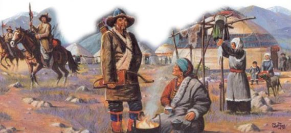
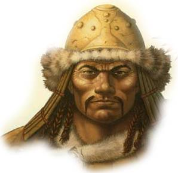

Les terres de la Horde
Au-delà du royaume des Magiciens rouges du Thay et de la Rashéménie se trouve une terre désertique dont l'immensité fait pâlir même le Shaar ou les plaines des contrées du Mitan occidentales. C'est une vaste étendue dénudée, aride et à la végétation clairsemée, située entre Faerûn à l'ouest et Kara-Tur à l'est, occupée par plusieurs tribus nomades de féroces cavaliers et des bandes de pillards barbares qui vivent sous des tentes et se nourrissent de viande et de lait. Les anciens textes la mentionnent sous le nom de la Désolation sans Fin, mais tout le monde l'appelle les terres de la Horde, car c'est de là que provient la « machine à détruire » du même nom.
Fiers guerriers experts dans le maniement de l'arc court, vivant sous des tentes et s'alimentant principalement de viandes et de lait, les grandes tribus de la Désolation sans Fin s'unirent il y a quelques décades sous le commandement de Yamun Khahan et, telle une nuée de sauterelles, s'abattirent sur l'est de Faerûn. La Horde détruisit tout ce qui se dressait sur son chemin, et même les Magiciens rouges du Thay durent s'incliner devant elle et lui verser un lourd tribut. Les tribus finirent alors par se répandre sur toutes les terres civilisées de l'Inaccessible Orient. Par la suite, la Horde fut mise en déroute grâce aux efforts combinés des nations alliées de l'Ouest, sous le commandement du roi Azoun IV du Cormyr. Yamun Khahan fut capturé, exécuté, et la Horde se dispersa. Certains de ses membres retournèrent dans leur pays aride, d'autres s'installèrent sur les terres qu'ils avaient conquises...
{kind=link}
Terres de la Horde
2215 x 3008
Beaucoup de voyageurs voient les terres de la Horde comme un enfer perdu, une terre au mieux à oublier, au pire à effacer de la carte. A part quelques curiosités et leur race de chevaux robustes, ils n'y trouvent rien d'intéressant. Mais ils se trompent. En divisant l'Est et l'Ouest, la Désolation sans Fin a joué et joue encore un rôle significatif pour le développement de Faerûn et de Kara-Tur. Sans elle pour diviser ces deux mondes, ces derniers n'auraient en effet pas pu développer leur propre culture comme ils l'ont fait. L'étendue, le climat, et la géographie des terres de la Horde ont permis cette isolation.
Car la Désolation sans Fin mérite bien son nom. De grandes prairies arides, des déserts à la température caniculaire l'été et glaciale l'hiver, des montagnes poussiéreuses, des forêts sub-arctiques, des glaciers, des toundras, voici de quoi est composée cette étendue. Toutes ces terres étant donc peu fertiles, elles ont conduit les hommes à se regrouper majoritairement autour des lacs et des oasis, bien que certaines régions permettent toutefois de confortables conditions de vie, voire des implantations permanentes. En effet, cette terre n'est pas inhabitée, bien au contraire. De nombreux cavaliers nomades y vivent. Ces hommes, que les étrangers appellent barbares, vivent dans des tentes et parcourent des centaines de kilomètres au fil des saisons. Ils sont le coeur et l'âme de la steppe.
Les tribus
On dit que la terre et les hommes se façonnent mutuellement, et ceci prend tout son sens sur les terres de la Horde. Ce territoire étant trop pauvre pour qu'on y implante des villes, les cavaliers des steppes ont été contraints d'opter pour une vie de nomade, se déplaçant d'une praire à l'autre, d'une oasis à l'autre.
Les tribus des terres de la Horde
La terre les a donc modelés, les rendant durs et résistants. En retour, les hommes ont modelés leur terre, car bien qu'elle semble ouverte et sans fin, la steppe possède ses frontières.
Chaque région possède ses coutumes, ses mœurs, son originalité, qui marquent la terre. Et même si les étrangers, eux, ne voient dans tous ces nomades qu'un seul et unique peuple, les barbares sont en réalité divisés en plusieurs tribus, dont voici la liste des principales :
- Commani
- Dalat
- Gur
- Khassidi
- Naican
- Oigur
- Quirish
- Tuigan
- Zamogedi
La vie tribale
RÉFÉRENCES
La Désolation sans Fin ressemble beaucoup aux terres d'asie centrale du moyen-âge, à l'époque de Genghis Khan et Marco Polo.
La vie de ces nomades est centrée sur une chose : leur tente, également appelée yurt. Ressemblant à un dôme circulaire, sa toile est en peaux d'animaux et possède un trou au sommet afin de laisser s'échapper la fumée. Une seule yurt permet d'abriter une famille entière, au sens large, c'est à dire entre 6 et 10 occupants, voire même jusqu'à 15 en se serrant un peu pour les occasions spéciales. A l'intérieur, le sol est recouvert de plusieurs couches de peaux, et des coussins sont disposés de-ci de-là, servant à la fois de sièges et de lits. Une tenture sépare la chambre du chef de la yurt du reste de la tente, et une autre délimite le garde-manger où la viande est suspendue au plafond, hors de portée des chiens. Une yurt est suffisamment solide pour résister aux forts vents des steppes et, de par le mode de vie nomade de ses occupants, facilement démontable (moins de 2 heures) et transportable (par 4 chevaux).
Outre la yurt, un autre un élément essentiel de la vie de ces cavaliers est le cheval. Gardiens de troupeaux et chasseurs, les chevaux de ces hommes sont robustes, capables d'endurer les dures conditions climatiques de leur terre, et se contentent des maigres pâturages qu'offrent la steppe. Leur forte constitution leur permet d'emmener au galop un cavalier pendant plusieurs heures. Mais le cheval ne sert pas qu'au transport ; les nomades récupèrent le lait des juments, mangent sa viande, travaillent sa peau pour en faire des vêtements ou des outres, et l'utilisent pour la guerre. Il sert même à définir le niveau social de son cavalier. Mais les chevaux ne sont pas les seuls animaux élevés par les tribus. Moutons et bœufs sont communs dans les steppes, les chameaux sont particulièrement utilisés dans les régions sèches du désert du Quoya, et dans les montagnes les yacks, adaptés aux basses températures, forment l'ossature des troupeaux. De tous ces animaux, les hommes tirent du lait, de la viande, du cuir et de la laine. Car les nomades ne cultivent pas ; les seuls fruits et légumes qu'ils mangent sont sauvages, principalement des baies et des oignons. Le riz est un luxe apporté par les marchands, une peu comme le thé, très populaire pourtant mais également très cher.
Les hommes portent fréquemment la moustache et la barbe. Leur cheveux sont généralement coupés courts ou rasés au sommet du crâne pour ne se les laisser pousser longuement que sur les côtés. Les cheveux longs sont eux systématiquement tressés. Les visages sont creusés et halés. Chaque tribu possède ses couleurs et ses motifs traditionnels pour les vêtements, mais la base est la même dans toute la steppe, pour les hommes comme pour les femmes. Une longue tunique (kalat) qui descend sous les genoux, en coton ou en laine suivant la saison, un pantalon, et des bottes souples en cuir. Les chapeaux varient eux grandement d'une tribu à l'autre, chacune possédant son style propre. Certains portent une petite coiffe pointue (kolpak) avec des rabats sur les côtés pour protéger les oreilles et le cou. Les femmes arborent de simples foulards sur la tête (paranji), et d'autres tribus portent un chapeau en forme de bol (kupba). Presque tous, hommes, femmes ou enfants, portent également un petit couteau à usage quotidien. Les bracelets en or ou en argent, les colliers et les ceintures sont également courants.
Pour se divertir, les hommes organisent de grandes chasses qui ressemblent à des compétitions de tir à cheval, où les faucons sont des trophées recherchés. Les courses de chevaux, les concours de tirs à l'arc et les combats de lutte sont très populaires également. La nuit, les conteurs, les chansons et la poésie occupent jeunes et anciens.
Organisation des tribus
RELATIONS INTER-TRIBALES
Le principal conflit entre tribus oppose d'un côté les Naican, et de l'autre une alliance entre les Dalat et les Oigur, ceux-ci pratiquant de nombreux raids chez les Naican. Dans ce conflit, les Naican peuvent compter sur le soutien des Commani et des Tuigan.
Les différentes tribus des steppes ont toutes tendance à adopter la même organisation interne. En premier on retrouve la yurt, dirigée par le chef de famille. Plusieurs yurts regroupées ensemble forment l'obogh, une sorte de petit village. Trois ou quatre oboghs qui se regroupent donnent naissance à une petite horde appelée ordu, dirigée par un khan, l'équivalent d'un seigneur. Ce titre se transmet de père en fils dans la classe dirigeante, les noyans. Plusieurs ordus forment une tribu. Celles-ci ne possèdent pas de chef, chaque khan gardant sa propre autonomie sur sa horde tant que cela n'interfère pas avec une autre horde. Les khans sont reliés entre eux par de complexes liens du sang et les mariages, qui assurent la paix, l'harmonie et la protection mutuelle entre eux. Les disputes sont typiquement réglées en faveur du khan le plus puissant, en fonction de qui est allié avec qui. Ainsi c'est un grand honneur pour le khan d'une petite horde que d'avoir le soutien d'un khan plus puissant.
Mais le khan n'est pas le titre le plus haut auquel un homme peut prétendre. Quelques fois, face à un danger extérieur, ou bien lorsque qu'un khan charismatique surgit, les khans peuvent élire un khahan, un grand khan. Une fois décerné, ce titre ne peut alors plus être ôté, sauf par la force. Le khahan est le chef de tous les khans, il donne donc un énorme prestige et beaucoup de pouvoir à celui qui le reçoit. A la différence des khans, ce titre n'est pas héréditaire. Le khahan désigne lui-même celui qui devrait lui succéder après sa mort, mais ce sont les khans qui ont le dernier mot lors d'une élection. Le khahan a normalement autorité seulement sur une seule tribu, et n'est pas reconnu par les autres, cependant il est déjà arrivé qu'un khahan réussisse à unir différentes tribus, par la force ou la diplomatie. Avec le temps, un khahan pourrait rassembler une spectaculaire armée de guerriers ; c'est ce que nombres de nations autour de la steppe craignent le plus. Mais ceci n'est pas arrivé depuis si longtemps que certains dirigeants ont maintenant oublié à quel point les cavaliers de steppes peuvent être dangereux.
Les cavaliers des steppes
De nombreuses nations revendiquent la possession de la meilleure cavalerie ou des plus habiles cavaliers au monde. Aucun, cependant, n'est né et n'a été élevé sur une selle aussi parfaitement que les nomades de la Désolation sans Fin. Dès l'âge de trois ou quatre ans on apprend en effet aux jeunes garçons et aux filles à monter à cheval, et les arcs et les flèches leurs sont donnés comme jouets. A 16 ans un garçon est considéré comme un adulte, et se doit d'être un talentueux cavalier et un bon, à défaut d'excellent, archer. Mais les arcs et les chevaux ne sont pas les seuls domaines que doit savoir maîtriser un guerrier. Il doit aussi savoir se servir d'une lance, d'un sabre, et d'une perche-lasso (utilisée initialement par les gardiens de troupeaux pour attraper les chevaux, mais servant également aux guerriers pour capturer des prisonniers). L'armure dépend elle principalement des ressources du guerrier. Les pauvres porteront de simples armures de cuir (kalat) et quelques fois un bouclier rond et léger en osier. Les plus nantis arboreront des cottes de mailles, achetées à l'Ouest, voire même des armures de plaques provenant du Sempharan, de Khazari ou de Shou Lung. Peu sont fabriquées par les nomades eux-même.
Au combat, les guerriers des steppes se battent l'immense majorité du temps à cheval, préférant jouer les archers à cheval et attaquer l'ennemi à distance, puis se repliant lorsque celui-ci charge, pour éviter la mêlée. Certains appellent cela de la couardise, alors que c'est une intelligente stratégie qui ne leur fait subir que de légères pertes en comparaison de celles de leurs ennemis.
Religion
HOSPITALITÉ
Bien que les nomades aient une forte tradition de l'hospitalité, ce sont des gens très partiaux. Chaque tribu se considère supérieure aux autres, et particulièrement face aux étrangers qui ne vivent pas dans la steppe. Bien que les voyageurs soient traités poliment, ils ne seront jamais considérés comme l'égal des membres de la tribu.
Ainsi un seigneur de Faerûn découvrira que son guide est plus important que lui aux yeux des nomades. Cela est pire pour les non-humains, avec lesquels les tribus n'ont que de très rares contacts. Pour eux, les nains, elfes, et autres halfelins sont des sous-races assimilées aux créatures monstrueuses. Ceci a naturellement créé de grands conflits entre ces races et les habitants des terres de la Horde.
En tant que société nomade, les hommes des tribus ont des croyances religieuses simples. Deux dieux sont au centre de celles-ci. Le plus puissant et le plus respecté est Teylas, seigneur du ciel et des tempêtes, dieu du paradis. Il veille sur les nomades, leur envoie la pluie, les bénit et les protège des mauvais esprits. Lorsqu'il est en colère, il envoie de puissants éclairs sur ses ennemis. L'autre dieu majeur est Etugen, déesse de la terre. Elle augmente la taille de troupeau, les protège de la maladie, et donne de bonnes pâtures. En plus de ces deux divinités, les tribus croient en plusieurs dieux mineurs et esprits. Le culte des chevaux est particulièrement important, de même que la déesse de l'eau et le dieu de la chasse. Les pics montagneux sont eux occupés par des esprits qui se doivent d'être vénérés. Les nomades n'ont pas de dieux mauvais. Les mésaventures et les maladies sont dues aux mauvais esprits ou à la colère des dieux. De nombreuses coutumes dans les tribus n'ont d'ailleurs d'autres buts que de chasser les mauvais esprits.
Les nomades ont l'esprit ouvert et sont tolérants envers les religions des étrangers. Tant que le voyageur respecte les lois de la tribus, ils se fichent de qui il prit. Cette attitude a d'ailleurs permis à de nombreux cultes de s'implanter chez les nomades, et il est aujourd'hui possible de trouver des prêtres de n'importe quel dieu parmi eux. La majorité des prêtres nomades sont des chamans.
Magiciens et roublards
Les nomades ne font que très peu de différences entre la magie divine et la magie des arcanes, principalement à cause de leur manque de connaissance sur ce sujet. De fait, les magiciens gagnent auprès d'eux le même respect que les chamans. Les magiciens nomades se considèrent d'ailleurs eux-même comme des chamans, capables de communiquer avec les esprits aussi bien que les vrais chamans. La majorité d'entre eux sont des ensorceleurs.
Bien que pratiquement tous les nomades puissent être considérés comme des bandits et des pillards, les voleurs professionnels sont rares parmi eux. La raison en est fort simple : il n'y a pas assez d'opportunités pour eux. Il y a en effet peu de serrures à crocheter ou de pièges à désamorcer qui protégeraient des biens, et les yurts ne peuvent être escaladées comme des murs. Les roublards se spécialisent ainsi plus dans les mouvements silencieux et les déplacements discrets, jouant fréquemment le rôle d'éclaireur ou de guide au sein des tribus.

Coutumes et tabous
La vie des nomades est soigneusement contrôlée par nombre de traditions, coutumes, lois et autres tabous qui sont apparus aux fils des siècles. Certains trouvent leur racines dans les dures conditions de vie des terres de la Horde, d'autres sont basés sur la peur des mauvais esprits et des monstres, d'autres enfin n'ont pas de source identifiable, mais sont "des choses à faire". En voici une liste non-exhaustive :
- Ne pas marcher sur du feu ou mettre un couteau dedans (c'est une insulte à l'esprit du feu)
- Celui qui vole le cheval d'un khan sera tué, s'il vole celui d'un commun il sera battu
- Celui qui brise son serment envers le khan sera exécuté dans la nature (afin que son corps ne puisse être retrouvé)
- Ne pas laver ses vêtements dans la rivière (l'eau est précieuse et ne doit pas être polluée)
- Il est sage de se cacher durant l'orage (les éclairs punissent les mauvais)
- Celui qui voit un loup à l'aube ne devrait pas le tuer (c'est un bon présage)
- Ne tue pas les serpents (ils sont envoyés par le dieu Dragon)
- Il est mauvais de vendre le lait d'une jument (c'est une bénédiction des dieux)
- Ne pas marcher sur le seuil de la yurt d'un khan (c'est une grande insulte, le seuil représente son cou)
- Ne jamais punir un homme avec une cravache ou un fouet (seul les esclaves sont traités ainsi)
- Ne pas cracher la nourriture au sol (c'est une insulte envers les dieux qui ont donné cette bénédiction)
- Ne pas ramasser la nourriture qui est tombée par terre (elle a été volée par un mauvais esprit)
- Les étrangers ne doivent pas toucher la tête des enfants (c'est maudire l'enfant)
- Lorsqu'un homme meurt dans sa yurt, celle-ci doit être purifié avant que des personnes puissent y revivre (les mauvais esprits se sont emparés de la yurt)
Proverbes
Voici quelques proverbes de la steppe :
- Le signe qu'une femme est mauvaise est qu'elle ne connaît pas les coutumes
- Pas de thé, pas de sourire, pas de fierté
- La consultation est nécessaire à la décision, mais de la consultation se perdent les secrets
- Si tu as dit oui, tu ne peux plus dire que cela fait mal
- Un homme qui dit la vérité devrait avoir un pied à l'étrier
- Le plus grand malheur est de perdre son père jeune ou un cheval durant un voyage
- L'herbe est pour les animaux et la viande pour les hommes. Si tu manges de l'herbe, tu ne seras pas fort
Les nations autour de la steppe
La Désolation sans Fin n'est pas entièrement sauvage ou habitée par des cavaliers nomades. En bordure de la steppe sont établis plusieurs pays qui ont chacun un impact particulier sur les nomades.
A l'ouest des terres de la Horde se trouvent les terres de Narfell, de Rashéménie et du Thay.
- Le Narfell a aujourd'hui peu d'influence sur la vie des nomades, ses habitants étant devenus eux-mêmes nomades pour la plupart.
- La Rashéménie possède la plus longue et la plus accessible frontière commune avec la Désolation sans Fin. Traditionnel passage des invasions barbares vers l'Ouest, la Rashéménie a depuis construit la citadelle de Rashema, dans les montagnes du Levant, pour protéger ses terres. Ceci, plus la réputation des sorcières de Rashéménie, a découragé nombre de raids. Maintenant les nomades font plutôt du commerce que la guerre avec la Rashéménie, échangeant cuirs, peaux, fourrures et butins du pillage des caravanes de Shou Lung, contre du métal et de l'eau de vie.
- Le Thay est peu connu des nomades. Les magiciens se protègent efficacement avec leur magie.
Au sud, les nations ont par contre beaucoup plus d'influence sur les nomades, avec d'ouest en est : Murghom, Semphar, Solon, Ra-Khati, Khazari et Shou Lung.
Murghom
Murghom, séparé des steppes par les montagnes de Cuivre et le Bois Sauvage, est peu connu des nomades, alors que c'est pourtant le principal rival du Semphar. Le souverain officiel est le roi Tharmakkas IV, un vieillard presque sénile, à la solde de Mulhorande. La plupart du minerai extrait des montagnes de Cuivre - qui doivent leur nom aux riches filons de cuivre qu'elles recèlent - est d'ailleurs acheminé vers ce royaume. Une toute petite partie est elle vendue aux nomades. Au fil des siècles, des centaines de mines ont été creusées dans la région, de plus en plus profondes, se divisant en milliers de galeries. Environ la moitié d'entre elles sont encore en exploitation, et l'autre moitié est abandonnée, mais pas par tout le monde. De nombreuses créatures monstrueuses telles les orcs ou les gobelins les ont investies. Des bandes de brigands s'en servent aussi de refuges. Le Murghom n'étant pas assez organisé pour faire régner l'ordre sur ses terres, les autorités se contentent de patrouiller sur les routes, laissant les montagnes comme une zone de non-droit. Là où les mines sont encore exploitées, plusieurs villages de mineurs ont été bâti. Les hommes y sont trapus, sales, couverts de poussières et de suie. L'eau des rivières est rarement potable, car contaminée par l'excès de cuivre. Les guildes de mineurs y font la loi.
Semphar
Le Semphar, qui était il y a très longtemps une province de Mulhorande, avant de passer sous contrôle de l'empire Shou, est aujourd'hui une puissante nation indépendante, et l'une des plus influentes de la région. Son principal atout est sa situation, qui fait du Semphar le passage presque obligé du commerce entre l'Ouest et l'Est, par la route de la Soie notamment, route qui part et se termine à Dhaztanar, sur les rives du lac de Clairétoile. Pour les royaumes de l'ouest, c'est déjà une région exotique, dernier avant-poste avant le grand inconnu. Pour Shou Lung, c'est la dernière terre civilisée, celle qui sert de barrière entre eux et les royaumes des barbares.
Le Semphar est une nation riche, savante, et férue d'art, qui compte de nombreuses universités, plusieurs collèges de magie renommés, et de brillants artisans. Pour les nomades, c'est la terre des merveilles, là où ils peuvent acheter la plupart des biens dont ils ont besoin, comme le sucre, le thé, le café, les herbes, les métaux, le papier, les vêtements, la poterie. En échange, les nomades vendent au Semphar du bétail, de la laine, du cuir et des gemmes des montagnes du nord. On connaît également le Semphar pour les ruines de Bhaluin sur le lac de Clairétoile, la sombre forêt Sauvage au nord, et les monstres de la passe des Hurlements. Outre Dhaztanar, la capitale, là où vit le calife Abu Bakr, le souverain, les principales villes importantes sont Phelzol et Estanil.
Solon
Solon, au sud du Semphar, a une histoire sombre et en dents de scie. C'était autrefois un important royaume du Désert de Poussière qui rivalisait avec le Mulhorande et Shou Lung, commerçait avec le Ra-Khati, et qui s'était imposé comme une étape obligée pour les caravanes marchandes qui montaient de Durpar et des terres du sud. Mais l'avancée du Rauri (le désert de Poussière), les invasions Shou et les épidémies ont précipités le déclin de Solon. Aujourd'hui, ce n'est plus qu'une petite ville contrôlée entièrement par une liche, Amchubar Devayam, qui n'a que faire du bien-être de ses sujets. D'après les rumeurs elle viendrait de Shou Lung. Le Mal, les rites les plus écoeurants et la loi du plus fort s'y sont installés. On doit entre autres à la liche et à ses troupes la destruction de la cité de Kushk, à l'est, aux portes du Ra-Khati. Tout ceci explique pourquoi la région de Solon est maintenant évitée par la plupart des marchands et des voyageurs. Les habitants de la cité attendent eux toujours le héros qui viendra les délivrer du joug de leur tyran.
Ra-Khati
Caché dans les montagnes de Katakoro Shan, le Ra-Khati est un royaume mystérieux et isolé. Ses habitants ont une peur fanatique des étrangers, et essayent de maintenir leur existence la plus secrète possible. On sait donc peu de chose sur ce royaume, mais cela n'a pas pas toujours été ainsi. Le Ra-Khati avait il y a bien longtemps des contacts avec l'extérieur et commerçait, avec la ville de Kushk principalement. Mais, il y a plusieurs décennies, les forces du Mal en provenance de Solon détruisirent cette cité, et s'attaquèrent ensuite au Ra-Khati, qui ne doit sa survie qu'à l'intervention personnelle de son Dalaï Lama lors des combats. C'est depuis lors que les frontières ont été fermées et tout contact avec l'extérieur évité. Mais de son côté, la liche Amchubar n'aurait pas encore renoncé à sa conquête du Ra-Khati.
Le Ra-Khati est une théocratie menée par le Dalaï Lama, le plus grand prêtre de ces terres, qui réside dans un impressionnant palais à Saikhoi, la capitale, entre les deux Lacs Sacrés. Toutes les villes importantes possèdent un monastère de taille conséquente, où les moines passent leur temps à prier et à diriger la population. La plupart d'entre eux suivent la philosophie de la Voie Lumineuse. Aux étrangers qui pénètrent sur les terres de Ra-Khati, on propose 3 choix : y rester pour toujours, mourir, ou se faire couper la langue. De nombreux pèlerins qui viennent en pèlerinage aux sources sacrées de Gaya choisissent cette dernière option. Mais contrairement aux légendes, le Ra-Khati n'est pas riche. C'est une région rocailleuse avec peu de pâturage. Les principales activités de la population sont la culture de l'orge et du millet, l'élevage de moutons et de yacks, et la coupe du bois en prévision des longs hivers.
Khazari
Le Khazari est une petite nation de montagnards que traverse la route de la Soie et, comme pour le Semphar, la majorité de son économie provient des caravanes marchandes qui y passent, la terre étant peu fertile et les ressources naturelles très pauvres. Mais le Khazari n'est toutefois ni aussi bien placé, ni aussi bien organisé, ni aussi puissant que le Semphar. Le Khazari est de plus une nation divisée, qui n'aurait même pas les moyens de s'unifier en cas d'agression extérieure. Shou Lung le sait, il a oeuvré pour cela. Cette division est de plus accentuée par le fait que le Khazari possède dans son histoire une longue tradition d'invasions, que ce soit par les armées de la steppe ou bien par Shou Lung justement. Celles-ci ont contribué au fil des siècles à faire du Khazari un impressionnant mélange de cultures.
La capitale du Khazari est Skarou, une petite ville où vit le prince Ogandi, le régent du pays. Mais en réalité c'est un homme dépourvu d'influence, les villes de Khazari étant chacune dirigée par un gouverneur et les fiefs par des seigneurs. Tous ces titres se transmettent de père en fils. Une autre force du pays sont les moines de la Voie Lumineuse, un ordre extrêmement indépendant, avec lequel le prince doit également composer. Et puis il y a Shou Lung, auquel le Khazari appartenait dans le passé. L'empereur de ce grand royaume d'orient n'a d'ailleurs jamais cessé de réclamer les terres du Khazari. Toutefois l'heure n'est pas encore à l'épreuve de force pour Shou Lung, qui a réussi à placer auprès du prince de nombreux conseillers qui n'hésitent pas à influencer celui-ci lors de ses prises de décisions afin que cela favorise l'empire.
Les montagnes de Khazari sont également truffées de bandes de pillards, attirées par le trafic de la route de la Soie. Chaque seigneur ou gouverneur ne s'occupant que de ses affaires personnelles, les bandits ont encore de beaux jours devant eux. Il faut donc payer au Khazari pour avoir la protection des autorités, ce qui en fait d'ailleurs un pays cher pour les étrangers et les caravanes. Mais quelle autre route emprunter ? La Voie Dorée, aussi appelée route des Épices, au nord, est froide et encore plus dangereuse. Celle du Vieil Acier, qui passait par le Ra-Khati, est fermée. Le Khazari est donc un mal obligé pour les marchands.
Shou Lung
Complètement à l'est de la steppe se trouve Shou Lung, la nation qui a assurément eu la plus grosse influence sur les nomades. Attirés par sa richesse, sa puissance, son savoir, les cavaliers des steppes ont adoptés énormément des styles et des coutumes de Shou Lung, en autre le langage, l'écriture, et le goût du thé. Toutefois, chaque fois que les nomades ont pris quelque chose de Shou Lung, ils l'ont adapté et modifié à leurs manières.
La route de la soie
POUR LE MD
Les terres de la Horde sont vastes. Chaque région, voire chaque tribu, possède sa langue. Le MD peut s'amuser à jouer (avec modération) sur les accents et les problèmes de communications pour mettre de la couleur à une partie.
La route de la Soie part de Yenching en Shou Lung, franchit la passe de Repo La, traverse le Khazari, franchit la passe des Hurlements, et se termine à Dhaztanar. C'est la principale route commerciale entre l'Ouest et l'Est. Parce que c'est la plus courte et qu'elle est plus habitée, elle est largement préférée à la Voie Dorée au nord, qui est encore plus désolée. En règle générale, le voyage le long de la route de Soie est sûr, bien que pas particulièrement confortable. En Shou Lung, Khazari et Semphar, il y a de petits villages et de petites auberges, espacés d'une journée de voyage. Dans ces terres, la menace de bandits est faible. La route est patrouillé, surveillée, et le banditisme sévèrement puni. Aucun dirigeant ne veut effrayer le commerce et les caravanes qui viennent de si loin.
Les deux portions les plus dangereuses du voyage sont entre le Semphar et le Khazari, et vers la passe des Hurlements. Les bandits et les nomades se terrent dans la première, et des créatures atroces descendent parfois à la passe des Hurlements. Il est donc fréquent, voir coutumier, que les caravanes engagent une escorte supplémentaire à Alashan ou au Semphar, seulement dans le but de passer ce secteur. Une fois des terres plus sûres atteintes, ces gardes sont généralement congédiés.
Traduit par blueace